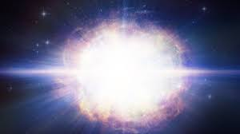

Stars: From birth to death
the birth of a star
We all know stars, don't we? Those twinkling stars like a diamond in the sky. Wanna learn stuff about stars? You're at the right place for that! A star's life begins with the gravitational collapse of a gaseous nebula of material composed primarily of hydrogen, along with helium and trace amounts of heavier elements. The total mass of a star is the main factor that determines its evolution and eventual fate. For most of its active life, a star shines due to thermonuclear fusion of hydrogen into helium in its core, releasing energy that traverses the star's interior and then radiates into outer space.

A nebula
the death of a star
Hmmm.. did ya get that? Well, the more interesting part is the slow process of a star dying! And yes, a star actually dies! Most stars take millions of years to die. When a star like the Sun has burned all of its hydrogen fuel, it expands to become a red giant. This may be millions of kilometres across - big enough to swallow the planets Mercury and Venus. After puffing off its outer layers, the star collapses to form a very dense white dwarf. One teaspoon of material from a white dwarf would weigh up to 100 tonnes. Over billions of years, the white dwarf cools and becomes invisible. Stars heavier than eight times the mass of the Sun end their lives very suddenly. When they run out of fuel, they swell into red supergiants. They try to keep alive by burning different fuels, but this only works for a few million years. Then they blow themselves apart in a huge supernova explosion. For a week or so, the supernova outshines all of the other stars in its galaxy. Then it quickly fades. All that is left is a tiny, dense object – a neutron star or a black hole – surrounded by an expanding cloud of very hot gas. The elements made inside the supergiant (such as oxygen, carbon and iron) are scattered through space. This stardust eventually makes other stars and planets.
A supernova Star

A blackhole (Illustration)
A blackhole
A black hole is a region of spacetime where gravity is so strong that nothing — no particles or even electromagnetic radiation such as light — can escape from it. The theory of general relativity predicts that a sufficiently compact mass can deform spacetime to form a black hole. The boundary of no escape is called the event horizon. Although it has an enormous effect on the fate and circumstances of an object crossing it, it has no locally detectable features according to general relativity. In many ways, a black hole acts like an ideal black body, as it reflects no light. Moreover, quantum field theory in curved spacetime predicts that event horizons emit Hawking radiation, with the same spectrum as a black body of a temperature inversely proportional to its mass. This temperature is of the order of billionths of a kelvin for stellar black holes, making it essentially impossible to observe directly.Objects whose gravitational fields are too strong for light to escape were first considered in the 18th century by John Michell and Pierre-Simon Laplace. In 1916, Karl Schwarzschild found the first modern solution of general relativity that would characterize a black hole. David Finkelstein, in 1958, first published the interpretation of "black hole" as a region of space from which nothing can escape.
How are they formed? - Diving deeper
Primordial black holes are thought to have formed in the early universe, soon after the big bang. Stellar black holes form when the center of a very massive star collapses in upon itself. This collapse also causes a supernova, or an exploding star, that blasts part of the star into space. Scientists think supermassive black holes formed at the same time as the galaxy they are in. The size of the supermassive black hole is related to the size and mass of the galaxy it is in.
facts to learn!
what are exo-planets?
All of the planets in our solar system orbit around the Sun. Planets that orbit around other stars are called exoplanets. Exoplanets are very hard to see directly with telescopes. They are hidden by the bright glare of the stars they orbit. So, astronomers use other ways to detect and study these distant planets. They search for exoplanets by looking at the effects these planets have on the stars they orbit. The planet showed in the image is an example.Kepler-1649c is an Earth-sized exoplanet, likely rocky, orbiting within the habitable zone of the red dwarf star Kepler-1649, the outermost planet of the planetary system discovered by Kepler’s space telescope. It is located about 301 light-years (92 pc) away from Earth, in the constellation of Cygnus. Kepler-1649c orbits its star a distance of 0.0649 AU (9.71 million km; 6.03 million mi) from its host star with an orbital period of roughly 19.53 days, has a mass 1.2x times that of Earth, and has a radius of around 1.02 times that of Earth. Based on its mass and radius, it is likely a terrestrial planet, though its proximity to its star means it may likely be tidally locked. Kepler-1649c is estimated to receive about three-quarters of radiation from its host star as Earth does from the Sun. In 2017, Jeff Coughlin, the director of SETI's K2 Science Office, described it as the most "similar planet to Earth" found so far by the Kepler Space Telescope. The planet was initially deemed a false positive by Kepler's robovetter algorithm. The Kepler False Positive Working Group published its recovery on April 15, 2020. Its first scientific description was published in The Astrophysical Journal Letters, with first author Andrew Vanderburg, in April 2020.

Where are these rings found?
A ring system is a disc or ring, orbiting an astronomical object, that is composed of solid material such as dust and moonlets, and is a common component of satellite systems around giant planets. A ring system around a planet is also known as a planetary ring system. The most prominent and most famous planetary rings in the Solar System are those around Saturn, but the other three giant planets (Jupiter, Uranus, and Neptune) also have ring systems. Recent evidence suggests that ring systems may also be found around other types of astronomical objects, including minor planets, moons, and brown dwarfs, and as well, the interplanetary spaces between planets such as Venus and Mercury.There are three ways that thicker planetary rings (the rings around planets) have been proposed to have formed: from material of the protoplanetary disk that was within the Roche limit of the planet and thus could not coalesce to form moons, from the debris of a moon that was disrupted by a large impact, or from the debris of a moon that was disrupted by tidal stresses when it passed within the planet's Roche limit. Most rings were thought to be unstable and to dissipate over the course of tens or hundreds of millions of years, but it now appears that Saturn's rings might be quite old, dating to the early days of the Solar System. Fainter planetary rings can form as a result of meteoroid impacts with moons orbiting around the planet or, in case of Saturn's E-ring, the ejecta of cryovolcanic material.

What is the sun made up of? And more!
The sun is made up of a blazing combination of gases. These gases are actually in the form of plasma. Plasma is a state of matter similar to gas, but with most of the particles ionized. This means the particles have an increased or reduced number of electrons. About three quarters of the sun is hydrogen, which is constantly fusing together and creating helium by a process called nuclear fusion. Helium makes up almost the entire remaining quarter. A very small percentage (1.69 percent) of the sun’s mass is made up of other gases and metals: iron, nickel, oxygen, silicon, sulfur, magnesium, carbon, neon, calcium, and chromium This 1.69 percent may seem insignificant, but its mass is still 5,628 times the mass of Earth.The sun is not a solid mass. It does not have easily identifiable boundaries like rocky planets like Earth. Instead, the sun is composed of layers made up almost entirely of hydrogen and helium. These gases carry out different functions in each layer, and the sun’s layers are measured by their percentage of the sun’s total radius. The sun is permeated and somewhat controlled by a magnetic field. The magnetic field is defined by a combination of three complex mechanisms: a circular electric current that runs through the sun, layers of the sun that rotate at different speeds, and the sun’s ability to conduct electricity. Near the sun’s equator, magnetic field lines make small loops near the surface. Magnetic field lines that flow through the poles extend much farther, thousands of kilometers, before returning to the opposite pole. The sun rotates around its own axis, just like Earth. The sun rotates counterclockwise, and takes between 25 and 35 days to complete a single rotation. The sun orbits clockwise around the center of the Milky Way. Its orbit is between 24,000 and 26,000 light-years away from the galactic center. The sun takes about 225 million to 250 million years to orbit one time around the galactic center.